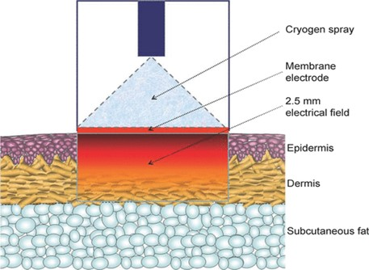
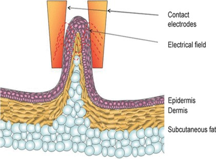
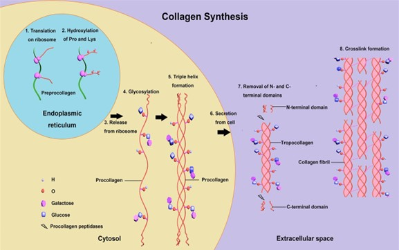

Home-based Radiofrequency Energy Devices: Innovative Ideas in Hybrid Skin Rejuvenation Therapy
Demand for non-invasive, flexible and home-based cosmetic repair option is on the rise. How about a focus on RF pulsed energy devices?
As in other branches of medicine, the procedures and conventional therapy methods in Dermatology keep improving. In many parts, the recent innovations in Dermatology are birth from advancements in Cell Therapy Studies, Skin Matrix Studies, and multiple clinical trials exploring the beneficial effects of Biotechnology in the reversal of physiological aging. These studies further expanded the current knowledge trends in genetics, photo-aging, and invasive cosmetic therapy. Skin health is considered an observable parameter for cellular aging as it provides a vivid picture of how living tissues develop through a life cycle.
The complex cycle of skin aging is characterized by both tissue-level changes to the cellular matrix and physical manifestations. This double-pronged process occurs simultaneously, with observable features including paper-like wrinkles, a thicker epidermis, disorganized collagen fibers, loss of skin tone and elasticity, and abnormal pigmentation (Zhang and Duan 2018). In pathologic conditions, extra-skin tissues might also develop as a non-cancerous outgrowth or blemishes resistant to conventional therapy.
An aberration in lipid metabolism, DNA mutation, and chemical-induced degradation of the extracellular matrix are considered the most documented causes and, or accelerators of physiological aging and pathological skin damage (Kruglikov, Zhang, and Scherer 2021).
With regards to the recent innovation in modern dermatology, the focus of therapy is fixated on decreasing the speed of physiological aging, reversing the mechanism of skin aging, or treating the physical manifestation of skin damage. As the global population of the aged steadily increases, there is an increased demand for cosmetic repair surgeries, topical therapeutic agents, and general skin rejuvenation products.
Hybrid Skin Rejuvenation in Modern Dermatology
Hybrid skin rejuvenation procedures currently set the standard for anti-aging therapies. This new approach simply involves the combination of several anti-aging treatments in the same treatment session. In many candidates of dermatology repair, the underlying processes of skin damage include various etiologies occurring simultaneously. Hybrid skin rejuvenation programs use multiple anti-aging treatments to achieve a preferred cosmetic repair.
This joint approach initiates multiple cellular modifications that reverse pathological skin damage or slow the rate of physiological aging. Before selecting the component therapies for hybrid rejuvenation, pre-treatment evaluations are conducted to influence the choice of rejuvenation therapy.
In addition to the improved results it guarantees, this multifaceted therapy offers a patient-specific regimen tailored towards a compound need. As a personalized medical plan, hybrid skin rejuvenation therapies evaluate the extent and location of damage, possible etiologies, patients’ therapy expectations, and biological tolerance for therapy. In essence, the combined treatments for a particular Hybrid Skin Rejuvenation plan reflect the patients’ cosmetic repair needs.
For instance, the combination of dermal fillers with radio frequency treatments has been proven to restore tissue volume with an added-on effect of improving facial firmness and texture. The synergistic effects of combining radio frequency treatments with both hyaluronic acid and calcium hydroxylapatite are widely acknowledged in Dermatology.
Although the synergistic effects of combining RF pulsed energy with other components in cosmetic repair have empirical study evidences, you should consult your dermatologist before trying out any of these combinations.
Procedures in Hybrid Skin Rejuvenation Programs
Employing hybrid skin rejuvenation therapy involves a systematic staging of therapy options. In a bid to properly manage adverse effects, reduce treatment time and improve therapy prognosis, the components of treatment plans are stages in levels. The level 1 staging only explores topical therapy options and non-prescriptive remedies.
Over-the-counter topical dermatological preparations and drug-infused masks are the primary options for this staging. In many clinical presentations, the cosmetic repair needed at level 1 staging directly combats mild skin damage and accelerated physiological aging. Level 1 treatments are primarily employed for prevention purposes.
Home-based energy devices including radio-frequency (RF) and micro-needling form the core for level 2 therapy staging. Just as with level treatment, level 2 treatments are conducted as prevention therapies (Paasch et al. 2009). However, this level is reserved for patients over 30 years who are recommended for a cosmetic repair module serving both protentional and rejuvenation purposes. Patients recommended for level 3 hybrid rejuvenation therapy are scheduled for non-invasive cosmetic procedures.
Non-invasive cosmetic procedures are considered when the results of level 2 treatment are insufficient for damage reversal. Level 4 staging involves invasive cosmetic repair procedures conducted in the Dermatology clinic. Reserved as a last resort, level 4 is only recommended for patients with no significant cosmetic improvement from level 3 therapies.
Home-based Energy Devices
Essentially, home-based energy devices constitute an impedance that directly converts electrical energy to thermal energy. Designed as easy-to-use skincare routine devices, home-based RF devices are a major part of the hybrid skin rejuvenation strategy. The manufacturing standards for these devices might be slightly different. However, the instructions for use and safety guidelines are similar. The critical temperature needed to initiate collagen repair ranges from 57 – 75 degrees Celsius, with average therapeutic levels depending on skin types (Khan and Khalid 2021).
Home-based RF energy devices, compared to the non-home-based alternatives, represent advanced innovation in cosmetic repair and the beauty of dermatological science. With the introduction and approval of home-based RF energy devices, the trend of cosmetic care is changing steadily (Britt and Marcus 2017). People can now afford RF devices for the personal management of wrinkles, sagging, and accelerated skin aging. As expected, the consumer response was a steady shift from long-hour, expensive cosmetic clinic appointments to a self-serviced at-home skincare routine.
In 2019, the home medical equipment market value was estimated at $30.54 billion. By 2027, the value is expected to reach $56.45 billion with therapeutic care equipment tipped as the major contributor (Cohen et al. 2021).
The designs for these devices follow the same principle; the conversion of electrical energy to thermal energy at levels safe for dermal application. Thermal energy flows through the tissues from a point of entry to a point of exit through electrodes. Depending on the design, the electrode types on home-based RF energy devices can be mono polar (Mono-polar radio-frequency therapy) or bipolar (Bipolar radio-frequency therapy). The energy field created by these electrodes is converted into thermal energy, a process that eventually stimulates collagen denaturation and synthesis.


Radio-frequency Device in Skin Rejuvenation
Radio-frequency (RF) is one of the most widely used non-invasive procedures in cosmetic repair surgeries. The objective of radio-frequency therapy is simple: induction of controlled thermal energy in the deep layers of the skin initiates a cycle of collagen changes and conformation. Commonly used as a therapy for skin laxity, RF produces controlled upward fluctuations in tissue temperature using a high-frequency alternating current (Araújo et al. 2015).
The heat supplied varies, depending on the current, behavior of the electrodes, and the impedance level of the tissue. Energy levels supplied also directly depend on the target tissues and the rate of collagen conformation.
How RF Pulsed Energy Changes Collagen Conformation
Hybrid skin rejuvenation strategies, as an innovative approach in cosmetic skin repair, focus on the skin’s collagen and elastic fiber matrix. By providing a biological scaffolding over the subcutaneous tissues, the integrity of this collagen network determines the firmness and elasticity of the skin.
On an average estimate, the adult skin losses about 1% of its dermal collagen composition every year (Ganceviciene et al. 2012).
With advanced age, this intricate collagen-elastin fiber arrangement loosens as a direct consequence of collagen degradation and an altered collagen replacement. A disrupted collagen network is physically observed as paper-like wrinkles and a slacked skin texture.
Sub-surface heating of the skin tissues distributes a burst of thermal energy through the collagen matrix. Once the collagen fibers are heated, the cross-links are disrupted. At the therapeutic thermal level, collagen fibers undergo denaturation causing the triple-helix formation to shrink and unwind. Collagen denaturation is reportedly dependent on the exposure time and the thermal energy level. As a biological response to collagen denaturation, a complex cycle of natural wound healing is initiated. Radiofrequency energy distribution in the collagen matrix ultimately induces colagenneosynthesis (Kao et al. 2013).
The extent of collagen denaturation, fibroblast activation, fibroplasia, and collagen reformation depends on skin type, exposure time, and thermal energy distribution. According to reported case studies, collagen shrinkage occurs to a certain depth followed by colagenneosynthesis in the superficial layers. In hybrid skin rejuvenation therapy, RF treatment also increases blood perfusion, supporting natural healing and fibroblast activity necessary for cosmetic repair.
Collagenneosynthesis - Principle, Mechanism and Underlying Science
Thermal energy supplied at the therapeutic level on the skin matrix stimulates collagen denaturation and a biological process of collagen synthesis. The science supporting collagen synthesis using pulsed radio-frequency energy is a recurring theme in dermatology studies. In a 2013 publication of the Journal of Plastic and Reconstructive Surgery, researchers described how pulsed radio-frequency energy-treated skin defects were characterized by dermal cell proliferation and increased collagen synthesis in animal models.
Collagen is a naturally-occurring family of proteins with over 25 types described so far in biological systems. The complex processes orchestrating collagens formation occur both extracellularly and intracellularly in the fibroblast cells.

Structurally, collagen is composed of elongated fibrils wound in a triple helix of two alpha1 chains and one alpha2 chain. Several amino acid sequences including Glycine-X-Hydroxyproline and Glycine-Proline-X are found in the collagen matrix. Alpha chains form the bedrock of collagen formation. Two alpha1 chains and one alpha2 combine to form to procollagen. Extracellular modification of procollagen strands produces tropocollagen molecules. On further processing, tropocollagen molecules are covalently bonded to form collagen fibrils. Multiple collagen fibers aggregate to produce the different types of collagen fibers found in the skin (Onursal et al. 2021).
Effects of Home-based Skin Rejuvenation Therapy
The rejuvenating effects of home-based RF devices are perhaps the begets benefit they offer to candidates of cosmetic repair. By stimulating collagen synthesis, these devices restore the pristine nature of the skin matrix, firming its texture and reversing the visible signs of physiological aging. As thermal energy denatures the collagen fibers, heat pulse initiates collagen synthesis through the natural response to wound healing. The in vivo response to thermal wound healing constitutes the inflammatory, proliferative, and remodeling stages.
Dermal health application breaks the intramolecular hydrogen bonds of the collagen fibers, resulting in denaturation and immediate contraction. Further synthesis, deposition, and remodeling of new collagen fibers increase the overall collagen volume and integrity. This explains the firmness and the improved skin texture noticed almost immediately. With home-based RF energy devices, visible clinical results are achieved within the first few months of therapy.
Why Consider Home-based RF Energy Devices?
Compared with level one procedures, home-based RF energy devices have shown more effectiveness and efficacy. The therapy sequence slows down physiological aging and reverses cosmetic damage by collagen decay and improved synthesis of collagen. Also, as a cheaper alternative to hospital cosmetic therapies sessions, home-based RF energy devices are gaining more recognition in cosmetic repair than level 3 in-office procedures. Conventionally, skin conditions are treated by in-person clinic appointments.
However, the therapy session involves frequent clinic visits and huge financial inputs. As it stands, the trend of dermatology care is steadily shifting towards personalized cosmetic care without frequent clinic visits. Home-based RF devices fit perfectly into this space as a companion of choice and the most effective option available globally.